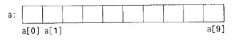
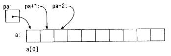

Указатель - это переменная, содержащая адрес переменной. Указатели широко применяются в Си - отчасти потому, что в некоторых случаях без них просто не обойтись, а отчасти потому, что программы с ними обычно короче и эффективнее. Указатели и массивы тесно связаны друг с другом: в данной главе мы рассмотрим эту зависимость и покажем, как ею пользоваться. Наряду с goto указатели когда-то были объявлены лучшим средством для написания малопонятных программ. Так оно и есть, если ими пользоваться бездумно. Ведь очень легко получить указатель, указывающий на что-нибудь совсем нежелательное. При соблюдении же определенной дисциплины с помощью указателей можно достичь ясности и простоты. Мы попытаемся убедить вас в этом.
Изменения, внесенные стандартом ANSI, связаны в основном с формулированием точных правил, как работать с указателями. Стандарт узаконил накопленный положительный опыт программистов и удачные нововведения разработчиков компиляторов. Кроме того, взамен char* в качестве типа обобщенного указателя предлагается тип void* (указатель на void).
Начнем с того, что рассмотрим упрощенную схему организации памяти. Память типичной машины подставляет собой массив последовательно пронумерованных или проадресованных ячеек, с которыми можно работать по отдельности или связными кусками. Применительно к любой машине верны следующие утверждения: один байт может хранить значение типа char, двухбайтовые ячейки могут рассматриваться как целое типа short, а четырехбайтовые - как целые типа long. Указатель - это группа ячеек (как правило, две или четыре), в которых может храниться адрес. Так, если c имеет тип char, а p - указатель на c, то ситуация выглядит следующим образом:

Унарный оператор & выдает адрес объекта, так что инструкция
p = &c;
присваивает переменной p адрес ячейки c (говорят, что p указывает на c). Оператор & применяется только к объектам, расположенным в памяти: к переменным и элементам массивов. Его операндом не может быть ни выражение, ни константа, ни регистровая переменная.
Унарный оператор * есть оператор косвенного доступа. Примененный к указателю он выдает объект, на который данный указатель указывает. Предположим, что x и y имеют тип int, а ip – укаэатель на int. Следующие несколько строк придуманы специально для того, чтобы показать, каким образом объявляются указатели и как используются операторы & и *.
int х = 1, у = 2, z[10]; int *ip; /* ip - указатель на int */ ip = &x; /* теперь ip указывает на x */ y = *ip; /* y теперь равен 1 */ *ip = 0; /* x теперь равен 0 */ ip = &z[0]; /* ip теперь указывает на z[0] */
Объявления x, y и z нам уже знакомы. Объявление указателя ip
int *ip;
мы стремились сделать мнемоничным - оно гласит: "выражение *ip имеет тип int". Синтаксис объявления переменной "подстраивается" под синтаксис выражений, в которых эта переменная может встретиться. Указанный принцип применим и в объявлениях функций. Например, запись
double *dp, atof (char *);
означает, что выражения *dp и atof(s) имеют тип double, а аргумент функции atof есть указатель на char.
Вы, наверное, заметили, что указателю разрешено указывать только на объекты определенного типа. (Существует одно исключение: "указатель на void" может указывать на объекты любого типа, но к такому указателю нельзя применять оператор косвенного доступа. Мы вернемся к этому в параграфе 5.11.)
Если ip указывает на x целочисленного типа, то *ip можно использовать в любом месте, где допустимо применение x; например,
*ip = *ip + 10;
увеличивает *ip на 10.
Унарные операторы * и & имеют более высокий приоритет, чем арифметические операторы, так что присваивание
y = *ip + 1;
берет то, на что указывает ip, и добавляет к нему 1, а результат присваивает переменной y. Аналогично
*ip += 1;
увеличивает на единицу то, на что указывает ip; те же действия выполняют
++*ip;
и
(*iр)++;
В последней записи скобки необходимы, поскольку если их не будет, увеличится значение самого указателя, а не то, на что он указывает. Это обусловлено тем, что унарные операторы * и ++ имеют одинаковый приоритет и порядок выполнения - справа налево.
И наконец, так как указатели сами являются переменными, в тексте они могут встречаться и без оператора косвенного доступа. Например, если iq есть другой указатель на int, то
iq = ip;
копирует содержимое ip в iq, чтобы ip и iq указывали на один и тот же объект.
Поскольку в Си функции в качестве своих аргументов получают значения параметров, нет прямой возможности, находясь в вызванной функции, изменить переменную вызывающей функции. В программе сортировки нам понадобилась функция swap, меняющая местами два неупорядоченных элемента. Однако недостаточно написать
swap(a, b);
где функция swap определена следующим образом:
void swap(int х, int у) /* НЕВЕРНО */
{
int temp;
temp = х;
x = y;
у = temp;
}
Поскольку swap получает лишь копии переменных a и b, она не может повлиять на переменные a и b той программы, которая к ней обратилась. Чтобы получить желаемый эффект, вызывающей программе надо передать указатели на те значения, которые должны быть изменены:
swap(&a, &b);
Так как оператор & получает адрес переменной, &a есть указатель на a. В самой же функции swap параметры должны быть объявлены как указатели, при этом доступ к значениям параметров будет осуществляться косвенно.
void swap(int *px, int *py) /* перестановка *px и *py */
{
int temp;
temp = *рх;
*рх = *py;
*ру = temp;
}
Графически это выглядит следующим образом: в вызывающей программе:

Аргументы-указатели позволяют функции осуществлять доступ к объектам вызвавшей ее программы и дают возможность изменить эти объекты. Рассмотрим, например, функцию getint, которая осуществляет ввод в свободном формате одного целого числа и его перевод из текстового представления в значение типа int. Функция getint должна возвращать значение полученного числа или сигнализировать значением EOF о конце файла, если входной поток исчерпан. Эти значения должны возвращаться по разным каналам, так как нельзя рассчитывать на то, что полученное в результате перевода число никогда не совпадет с EOF.
Одно из решений состоит в том, чтобы getint выдавала характеристику состояния файла (исчерпан или не исчерпан) в качестве результата, а значение самого числа помещала согласно указателю, переданному ей в виде аргумента. Похожая схема действует и в программе scanf, которую мы рассмотрим в параграфе 7.4. Показанный ниже цикл заполняет некоторый массив целыми числами, полученными с помощью getint.
int n, array[SIZE], getint (int *);
for (n = 0; n < SIZE && getint (&array[n]) != EOF; n++)
;
Результат каждого очередного обращения к getint посылается в array[n], и n увеличивается на единицу. Заметим, и это существенно, что функции getint передается адрес элемента array[n]. Если этого не сделать, у getint не будет способа вернуть в вызывающую программу переведенное целое число.
В предлагаемом нами варианте функция getint возвращает EOF по концу файла; нуль, если следующие вводимые символы не представляют собою числа; и положительное значение, если введенные символы представляют собой число.
#include <ctype.h>
int getch (void);
void ungetch (int);
/* getint: читает следующее целое из ввода в *pn */
int getint(int *pn)
{
int c, sign;
while (isspace(c = getch()))
; /* пропуск символов-разделителей */
if(!isdigit(c) && c != EOF && c != '+' && c != '-') {
ungetch (c); /* не число */
return 0;
}
sign =(c =='-') ? -1 : 1;
if (с == '+' || с == '-')
с = getch();
for (*pn = 0; isdigit(c); c = getch())
*pn = 10 * *pn + (c -'0');
*pn *= sign;
if (c!= EOF)
ungetch(c);
return c;
}
Везде в getint под *pn подразумевается обычная переменная типа int. Функция ungetch вместе с getch (параграф 4.3) включена в программу, чтобы обеспечить возможность отослать назад лишний прочитанный символ.
Упражнение 5.1. Функция getint написана так, что знаки - или +, за которыми не следует цифра, она понимает как "правильное" представление нуля. Скорректируйте программу таким образом, чтобы в подобных случаях она возвращала прочитанный знак назад во ввод.
Упражнение 5.2. Напишите функцию getfloat - аналог getint для чисел с плавающей точкой. Какой тип будет иметь результирующее значение, задаваемое функцией getfloat?
В Си существует связь между указателями и массивами, и связь эта настолько тесная, что эти средства лучше рассматривать вместе. Любой доступ к элементу массива, осуществляемый операцией индексирования, может быть выполнен с помощью указателя. Вариант с указателями в общем случае работает быстрее, но разобраться в нем, особенно непосвященному, довольно трудно.
Объявление
int a[10];
Определяет массив a размера 10, т. е. блок из 10 последовательных объектов с именами a[0], a[1], ..., a[9].
Запись a[i] отсылает нас к i-му элементу массива. Если pa есть указатель на int, т. е. объявлен как
int *pa;
то в результате присваивания
pa = &a[0];
pa будет указывать на нулевой элемент a, иначе говоря, pa будет содержать адрес элемента a[0].
Теперь присваивание
x = *pa;
будет копировать содержимое a[0] в x.
Если pa указывает на некоторый элемент массива, то pa+1 по определению указывает на следующий элемент, pa+i - на i-й элемент после pa, a pa-i - на i-й элемент перед pa. Таким образом, если pa указывает на a[0], то
*(pa+1)
есть содержимое a[1], a+i - адрес a[i], a *(pa+i) - содержимое a[i].
Сделанные замечания верны безотносительно к типу и размеру элементов массива a. Смысл слов "добавить 1 к указателю", как и смысл любой арифметики с указателями, состоит в том, чтобы pa+1 указывал на следующий объект, a pa+i - на i-й после pa.
Между индексированием и арифметикой с указателями существует очень тесная связь. По определению значение переменной или выражения типа массив есть адрес нулевого элемента массива. После присваивания
pa = &a[0];
ра и a имеют одно и то же значение. Поскольку имя массива является синонимом расположения его начального элемента, присваивание pa=&a[0] можно также записать в следующем виде:
pa = a;
Еще более удивительно (по крайней мере на первый взгляд) то, что a[i] можно записать как *(a+i). Вычисляя a[i], Си сразу преобразует его в *(a+i); указанные две формы записи эквивалентны. Из этого следует, что полученные в результате применения оператора & записи &a[i] и a+i также будут эквивалентными, т. е. и в том и в другом случае это адрес i-го элемента после a. С другой стороны, если pa - указатель, то его можно использовать с индексом, т. е. запись pa[i] эквивалентна записи *(pa+i). Короче говоря, элемент массива можно изображать как в виде указателя со смещением, так и в виде имени массива с индексом.
Между именем массива и указателем, выступающим в роли имени массива, существует одно различие. Указатель - это переменная, поэтому можно написать pa=a или pa++. Но имя массива не является переменной, и записи вроде a=pa или a++ не допускаются.
Если имя массива передается функции, то последняя получает в качестве аргумента адрес его начального элемента. Внутри вызываемой функции этот аргумент является локальной переменной, содержащей адрес. Мы можем воспользоваться отмеченным фактом и написать еще одну версию функции strlen, вычисляющей длину строки.
/* strlen: возвращает длину строки */
int strlen(char *s)
{
int n;
for (n = 0; *s != '\0'; s++)
n++;
return n;
}
Так как переменная s - указатель, к ней применима операция ++; s++ не оказывает никакого влияния на строку символов функции, которая обратилась к strlen. Просто увеличивается на 1 некоторая копия указателя, находящаяся в личном пользовании функции strlen. Это значит, что все вызовы, такие как:
strlen("3дравствуй, мир"); /* строковая константа */
strlen(array); /* char array[100]; */
strlen(ptr); /* char *ptr; */
правомерны.
Формальные параметры
char s[];
и
char *s;
в определении функции эквивалентны. Мы отдаем предпочтение последнему варианту, поскольку он более явно сообщает, что s есть указатель. Если функции в качестве аргумента передается имя массива, то она может рассматривать его так, как ей удобно - либо как имя массива, либо как указатель, и поступать с ним соответственно. Она может даже использовать оба вида записи, если это покажется уместным и понятным.
Функции можно передать часть массива, для этого аргумент должен указывать на начало подмассива. Например, если a - массив, то в записях
f(&a[2])
или
f(a+2)
функции f передается адрес подмассива, начинающегося с элемента a[2]. Внутри функции f описание параметров может выглядеть как
f(int arr[]) {...}
или
f(int *arr) {...}
Следовательно, для f тот факт, что параметр указывает на часть массива, а не на весь массив, не имеет значения.
Если есть уверенность, что элементы массива существуют, то возможно индексирование и в "обратную" сторону по отношению к нулевому элементу; выражения p[-1], p[-2] и т.д. не противоречат синтаксису языка и обращаются к элементам, стоящим непосредственно перед p[0]. Разумеется, нельзя "выходить" за границы массива и тем самым обращаться к несуществующим объектам.
Если p есть указатель на некоторый элемент массива, то p++ увеличивает p так, чтобы он указывал на следующий элемент, а p+=i увеличивает его, чтобы он указывал на i-й элемент после того, на который указывал ранее. Эти и подобные конструкции - самые простые примеры арифметики над указателями, называемой также адресной арифметикой.
Си последователен и единообразен в своем подходе к адресной арифметике. Это соединение в одном языке указателей, массивов и адресной арифметики - одна из сильных его сторон. Проиллюстрируем сказанное построением простого распределителя памяти, состоящего из двух программ. Первая, alloc(n), возвращает указатель p на n последовательно расположенных ячеек типа char; программой, обращающейся к alloc, эти ячейки могут быть использованы для запоминания символов. Вторая, afree(p), освобождает память для, возможно, повторной ее утилизации. Простота алгоритма обусловлена предположением, что обращения к afree делаются в обратном порядке по отношению к соответствующим обращениям к alloc. Таким образом, память, с которой работают alloc и afree, является стеком (списком, в основе которого лежит принцип "последним вошел, первым ушел"). В стандартной библиотеке имеются функции malloc и free, которые делают то же самое, только без упомянутых ограничений: в параграфе 8.7 мы покажем, как они выглядят.
Функцию alloc легче всего реализовать, если условиться, что она будет выдавать куски некоторого большого массива типа char, который мы назовем allocbuf. Этот массив отдадим в личное пользование функциям alloc и afree. Так как они имеют дело с указателями, а не с индексами массива, то другим программам знать его имя не нужно. Кроме того, этот массив можно определить в том же исходном файле, что и alloc и afree, объявив его static, благодаря чему он станет невидимым вне этого файла. На практике такой массив может и вовсе не иметь имени, поскольку его можно запросить с помощью malloc у операционной системы и получить указатель на некоторый безымянный блок памяти.
Естественно, нам нужно знать, сколько элементов массива allocbuf уже занято. Мы введем указатель allocp, который будет указывать на первый свободный элемент. Если запрашивается память для n символов, то alloc возвращает текущее значение allocp (т. е. адрес начала свободного блока) и затем увеличивает его на n, чтобы указатель allocp указывал на следующую свободную область. Если же пространства нет, то alloc выдает нуль. Функция afree(p) просто устанавливает allocp в значение p, если оно не выходит за пределы массива allocbuf.
Перед вызовом allос:

После вызова alloc:

#define ALLOCSIZE 10000 /* размер доступного пространства */
static char allocbuf[ALLOCSIZE]; /* память для alloc */
static char *allocp = allocbuf; /* указатель на своб. место */
char *alloc(int n) /* возвращает указатель на n символов */
{
if (allocbuf + ALLOCSIZE - allocp >= n) {
allocp += n; /* пространство есть */
return allocp – n; /* старое p */
} else /* пространства нет */
return 0;
}
void afree(char *p) /* освобождает память, на которую указывает p */
{
if (р >= allocbuf && p < allocbuf + ALLOCSIZE)
allocp = p;
}
В общем случае указатель, как и любую другую переменную, можно инициализировать, но только такими осмысленными для него значениями, как нуль или выражение, приводящее к адресу ранее определенных данных соответствующего типа. Объявление
static char *allocp = allocbuf;
определяет allocp как указатель на char и инициализирует его адресом массива allocbuf, поскольку перед началом работы программы массив allocbuf пуст. Указанное объявление могло бы иметь и такой вид:
static char *allocp = &allocbuf[0];
поскольку имя массива и есть адрес его нулевого элемента. Проверка
if (allocbuf + ALLOCSIZE - allocp >= n) { /* годится */
контролирует, достаточно ли пространства, чтобы удовлетворить запрос на n символов. Если памяти достаточно, то новое значение для allocp должно указывать не далее чем на следующую позицию за последним элементом allocbuf. При выполнении этого требования alloc выдает указатель на начало выделенного блока символов (обратите внимание на объявление типа самой функции). Если требование не выполняется, функция alloc должна выдать какой-то сигнал о том, что памяти не хватает. Си гарантирует, что нуль никогда не будет правильным адресом для данных, поэтому мы будем использовать его в качестве признака аварийного события, в нашем случае нехватки памяти.
Указатели и целые не являются взаимозаменяемыми объектами. Константа нуль - единственное исключение из этого правила: ее можно присвоить указателю, и указатель можно сравнить с нулевой константой. Чтобы показать, что нуль - это специальное значение для указателя, вместо цифры нуль, как правило, записывают NULL - константу, определенную в файле <stdio.h> (I.B.: вообще-то эта константа определена в <stddef.h> или <string.h>). С этого момента и мы будем ею пользоваться. Проверки
if (allocbuf + ALLOCSIZE - allocp >= n) { /* годится */
и
if (p >= allocbuf && p < allocbuf + ALLOCSIZE)
демонстрируют несколько важных свойств арифметики с указателями. Во- первых, при соблюдении некоторых правил указатели можно сравнивать.
Если p и q указывают на элементы одного массива, то к ним можно применять операторы отношения ==, !=, <, >= и т. д. Например, отношение вида
p < q
истинно, если p указывает на более ранний элемент массива, чем q. Любой указатель всегда можно сравнить на равенство и неравенство с нулем. А вот для указателей, не указывающих на элементы одного массива, результат арифметических операций или сравнений не определен. (Существует одно исключение: в арифметике с указателями можно использовать адрес несуществующего "следующего за массивом" элемента, т. е. адрес того "элемента", который станет последним, если в массив добавить еще один элемент.)
Во-вторых, как вы уже, наверное, заметили, указатели и целые можно складывать и вычитать. Конструкция
p + n
означает адрес объекта, занимающего n-е место после объекта, на который указывает p. Это справедливо безотносительно к типу объекта, на который указывает p; n автоматически домножается на коэффициент, соответствующий размеру объекта. Информация о размере неявно присутствует в объявлении p. Если, к примеру, int занимает четыре байта, то коэффициент умножения будет равен четырем.
Допускается также вычитание указателей. Например, если p и q указывают на элементы одного массива и p<q, то q-p+1 есть число элементов от p до q включительно. Этим фактом можно воспользоваться при написании еще одной версии strlen:
/* strlen: возвращает длину строки s */
int strlen(char *s)
{
char *p = s;
while (*p != '\0')
p++;
return p - s;
}
В своем объявлении p инициализируется значением s, т. е. вначале p указывает на первый символ строки. На каждом шаге цикла while проверяется очередной символ; цикл продолжается до тех пор, пока не встретится '\0'. Каждое продвижение указателя p на следующий символ выполняется инструкцией p++, и разность p-s дает число пройденных символов, т. е. длину строки. (Число символов в строке может быть слишком большим, чтобы хранить его в переменной типа int. Тип ptrdiff_t, достаточный для хранения разности (со знаком) двух указателей, определен в заголовочном файле <stddef.h>. Однако, если быть очень осторожными, нам следовало бы для возвращаемого результата использовать тип size_t, в этом случае наша программа соответствовала бы стандартной библиотечной версии. Тип size_t есть тип беззнакового целого, возвращаемого оператором sizeof.
Арифметика с указателями учитывает тип: если она имеет дело со значениями float, занимающими больше памяти, чем char, и p - указатель на float, то p++ продвинет p на следующее значение float. Это значит, что другую версию alloc, которая имеет дело с элементами типа float, а не char, можно получить простой заменой в alloc и afree всех char на float. Все операции с указателями будут автоматически откорректированы в соответствии с размером объектов, на которые указывают указатели.
Можно производить следующие операции с указателями: присваивание значения указателя другому указателю того же типа, сложение и вычитание указателя и целого, вычитание и сравнение двух указателей, указывающих на элементы одного и того же массива, а также присваивание указателю нуля и сравнение указателя с нулем. Других операций с указателями производить не допускается. Нельзя складывать два указателя, перемножать их, делить, сдвигать, выделять разряды; указатель нельзя складывать со значением типа float или double; указателю одного типа нельзя даже присвоить указатель другого типа, не выполнив предварительно операции приведения (исключение составляют лишь указатели типа void*).
Строковая константа, написанная в виде
"Я строка"
есть массив символов. Во внутреннем представлении этот массив заканчивается нулевым символом '\0', по которому программа может найти конец строки. Число занятых ячеек памяти на одну больше, чем количество символов, помещенных между двойными кавычками.
Чаще всего строковые константы используются в качестве аргументов функций, как, например, в
printf("здравствуй, мир\n");
Когда такая символьная строка появляется в программе, доступ к ней осуществляется через символьный указатель; printf получает указатель на начало массива символов. Точнее, доступ к строковой константе осуществляется через указатель на ее первый элемент.
Строковые константы нужны не только в качестве аргументов функций. Если, например, переменную pmessage объявить как
char *pmessage;
то присваивание
pmessage = "now is the time";
поместит в нее указатель на символьный массив, при этом сама строка не копируется, копируется лишь указатель на нее. Операции для работы со строкой как с единым целым в Си не предусмотрены.
Существует важное различие между следующими определениями:
char amessage[] = "now is the time"; /* массив */ char *pmessage = "now is the time"; /* указатель */
amessage - это массив, имеющий такой объем, что в нем как раз помещается указанная последовательность символов и '\0'. Отдельные символы внутри массива могут изменяться, но amessage всегда указывает на одно и то же место памяти. В противоположность ему pmessage есть указатель, инициализированный так, чтобы указывать на строковую константу. А значение указателя можно изменить, и тогда последний будет указывать на что-либо другое. Кроме того, результат будет неопределен, если вы попытаетесь изменить содержимое константы.

Дополнительные моменты, связанные с указателями и массивами, проиллюстрируем на несколько видоизмененных вариантах двух полезных программ, взятых нами из стандартной библиотеки. Первая из них, функция strcpy (s, t), копирует строку t в строку s. Хотелось бы написать прямо s = t, но такой оператор копирует указатель, а не символы. Чтобы копировать символы, нам нужно организовать цикл. Первый вариант strcpy, с использованием массива, имеет следующий вид:
/* strcpy: копирует t в s; вариант с индексируемым массивом*/
void strcpy(char *s, char *t)
{
int i;
i = 0;
while ((s[i] = t[i]) != '\0')
i++;
}
Для сравнения приведем версию strcpy с указателями:
/* strcpy: копирует t в s: версия 1 (с указателями) */
void strcpy(char *s, char *t)
{
while ((*s = *t) != '\0') {
s++;
t++;
}
}
Поскольку передаются лишь копии значений аргументов, strcpy может свободно пользоваться параметрами s и t как своими локальными переменными. Они должным образом инициализированы указателями, которые продвигаются каждый раз на следующий символ в каждом из массивов до тех пор, пока в копируемой строке t не встретится '\0'.
На практике strcpy так не пишут. Опытный программист предпочтет более короткую запись:
/* strcpy: копирует t в s; версия 2 (с указателями) */
void strcpy(char *s, char *t)
{
while ((*s++ = *t++) != '\0')
;
}
Приращение s и t здесь осуществляется в управляющей части цикла. Значением *t++ является символ, на который указывает переменная t перед тем, как ее значение будет увеличено; постфиксный оператор ++ не изменяет указатель t, пока не будет взят символ, на который он указывает. То же в отношении s: сначала символ запомнится в позиции, на которую указывает старое значение s, и лишь после этого значение переменной s увеличится. Пересылаемый символ является одновременно и значением, которое сравнивается с '\0'. В итоге копируются все символы, включая и заключительный символ '\0'.
Заметив, что сравнение с '\0' здесь лишнее (поскольку в Си ненулевое значение выражения в условии трактуется и как его истинность), мы можем сделать еще одно и последнее сокращение текста программы:
/* strcpy: копирует t в s; версия 3 (с указателями) */
void strcpy(char *s, char *t)
{
while (*s++ = *t++)
;
}
Хотя на первый взгляд то, что мы получили, выглядит загадочно, все же такая запись значительно удобнее, и следует освоить ее, поскольку в Си-программах вы будете с ней часто встречаться.
Что касается функции strcpy из стандартной библиотеки <string.h> то она возвращает в качестве своего результата еще и указатель на новую копию строки.
Вторая программа, которую мы здесь рассмотрим, это strcmp(s,t). Она сравнивает символы строк s и t и возвращает отрицательное, нулевое или положительное значение, если строка s соответственно лексикографически меньше, равна или больше, чем строка t. Результат получается вычитанием первых несовпадающих символов из s и t.
/* strcmp: выдает < 0 при s < t, 0 при s == t, > 0 при s > t */
int strcmp(char *s, char *t)
{
int i;
for (i = 0; s[i]== t[i]; i++)
if (s[i] == '\0')
return 0;
return s[i] - t[i];
}
Та же программа с использованием указателей выглядит так:
/* strcmp: выдает < 0 при s < t, 0 при s == t, > 0 при s > t */
int strcmp(char *s, char *t)
{
for ( ; *s == *t; s++, t++)
if (*s == '\0')
return 0;
return *s - *t;
}
Поскольку операторы ++ и -- могут быть или префиксными, или постфиксными, встречаются (хотя и не так часто) другие их сочетания с оператором *. Например.
*--p;
уменьшит p прежде, чем по этому указателю будет получен символ. Например, следующие два выражения:
*p++ = val; /* поместить val в стек */ val = *--p; /* взять из стека значение и поместить в val */
являются стандартными для посылки в стек и взятия из стека (см. параграф 4.3.).
Объявления функций, упомянутых в этом параграфе, а также ряда других стандартных функций, работающих со строками, содержатся в заголовочном файле <string.h>.
Упражнение 5.3. Используя указатели, напишите функцию strcat, которую мы рассматривали в главе 2 (функция strcat(s,t) копирует строку t в конец строки s).
Упражнение 5.4. Напишите функцию strend(s,t), которая выдает 1, если строка t расположена в конце строки s, и нуль в противном случае.
Упражнение 5.5. Напишите варианты библиотечных функций strncpy, strncat и strncmp, которые оперируют с первыми символами своих аргументов, число которых не превышает n. Например, strncpy(t,s,n) копирует не более n символов t в s. Полные описания этих функций содержатся в приложении B.
Упражнение 5.6. Отберите подходящие программы из предыдущих глав и упражнений и перепишите их, используя вместо индексирования указатели. Подойдут, в частности, программы getline (главы 1 и 4), atoi, itoa и их варианты (главы 2, 3 и 4), reverse (глава 3), а также strindex и getop (глава 4).
Как и любые другие переменные, указатели можно группировать в массивы. Для иллюстрации этого напишем программу, сортирующую в алфавитном порядке текстовые строки; это будет упрощенный вариант программы sort системы UNIX.
В главе 3 мы привели функцию сортировки по Шеллу, которая упорядочивает массив целых, а в главе 4 улучшили ее, повысив быстродействие. Те же алгоритмы используются и здесь, однако, теперь они будут обрабатывать текстовые строки, которые могут иметь разную длину и сравнение или перемещение которых невозможно выполнить за одну операцию. Нам необходимо выбрать некоторое представление данных, которое бы позволило удобно и эффективно работать с текстовыми строками произвольной длины.
Для этого воспользуемся массивом указателей на начала строк. Поскольку строки в памяти расположены вплотную друг к другу, к каждой отдельной строке доступ просто осуществлять через указатель на ее первый символ. Сами указатели можно организовать в виде массива. Одна из возможностей сравнить две строки - передать указатели на них функции strcmp. Чтобы поменять местами строки, достаточно будет поменять местами в массиве их указатели (а не сами строки).

Здесь снимаются сразу две проблемы: одна - связанная со сложностью управления памятью, а вторая - с большими накладными расходами при перестановках самих строк. Процесс сортировки распадается на три этапа:
чтение всех строк из ввода сортировка введенных строк печать их по порядку
Как обычно, выделим функции, соответствующие естественному делению задачи, и напишем главную программу main, управляющую этими функциями. Отложим на время реализацию этапа сортировки и сосредоточимся на структуре данных и вводе-выводе.
Программа ввода должна прочитать и запомнить символы всех строк, а также построить массив указателей на строки. Она, кроме того, должна подсчитать число введенных строк - эта информация понадобится для сортировки и печати. Так как функция ввода может работать только с конечным числом строк, то, если их введено слишком много, она будет выдавать некоторое значение, которое никогда не совпадет с количеством строк, например -1.
Программа вывода занимается только тем, что печатает строки, причем в том порядке, в котором расположены указатели на них в массиве.
#include <stdio.h>
#include <string.h>
#define MAXLINES 5000 /* максимальное число строк */
char *lineptr[MAXLINES]; /* указатели на строки */
int readlines(char *lineptr[], int nlines);
void writelines(char *lineptr[], int nlines);
void qsort(char *lineptr[], int left, int right);
/* сортировка строк */
main()
{
int nlines; /* количество прочитанных строк */
if ((nlines = readlines(lineptr, MAXLINES)) >= 0) {
qsort(lineptr, 0, nlines-1);
writelines(lineptr, nlines);
return 0;
} else {
printf("ошибка: слишком много строк\n");
return 1;
}
}
#define MAXLEN 1000 /* максимальная длина строки */
int getline(char *, int);
char *alloc(int);
/* readlines: чтение строк */
int readlines(char *lineptr[], int maxlines)
{
int len, nlines;
char *p, line[MAXLEN];
nlines = 0;
while ((len = getline(line, MAXLEN)) > 0)
if (nlines >= maxlines || (p = alloc(len)) == NULL)
return -1;
else {
line[len-1] = '\0'; /* убираем символ \n */
strcpy(p, line);
lineptr[nlines++] = p;
}
return nlines;
}
/* writelines: печать строк */
void writelines(char *lineptr[], int nlines)
{
int i;
for (i = 0; i < nlines; i++)
printf("%s\n", lineptr[i]);
}
Функция getline взята из параграфа 1.9. Основное новшество здесь - объявление lineptr:
char *lineptr[MAXLINES];
в котором сообщается, что lineptr есть массив из MAXLINES элементов, каждый из которых представляет собой указатель на char. Иначе говоря, lineptr[i] - указатель на символ, а *lineptr[i] - символ, на который он указывает (первый символ i-й строки текста).
Так как lineptr - имя массива, его можно трактовать как указатель, т. е. так же, как мы это делали в предыдущих примерах, и writelines переписать следующим образом:
/* writelines: печать строк */
void writelines(char *lineptr[], int nlines)
{
while (nlines-- > 0)
printf("%s\n", *lineptr++);
}
Вначале *lineptr указывает на первую строку: каждое приращение указателя приводит к тому, что *lineptr указывает на следующую строку, и делается это до тех пор, пока nlines не станет нулем.
Теперь, когда мы разобрались с вводом и выводом, можно приступить к сортировке. Быструю сортировку, описанную в главе 4, надо несколько модифицировать: нужно изменить объявления, а операцию сравнения заменить обращением к strcmp. Алгоритм остался тем же, и это дает нам определенную уверенность в его правильности.
/* qsort: сортирует v[left]...v[right] по возрастанию */
void qsort(char *v[], int left, int right)
{
int i, last;
void swap(char *v[], int i, int j);
if (left >= right) /* ничего не делается, если в массиве */
return; /* менее двух элементов */
swap(v, left, (left+right)/2);
last = left;
for(i = left+1; i <= right; i++)
if (strcmp(v[i], v[left]) < 0)
swap(v, ++last, i);
swap(v, left, last);
qsort(v, left, last-1);
qsort(v, last+1, right);
}
Небольшие поправки требуются и в программе перестановки.
/* swap: поменять местами v[i] и v[j] */
void swap(char *v[], int i, int j)
{
char *temp;
temp = v[i];
v[i] = v[j];
v[j] = temp;
}
Так как каждый элемент массива v (т. е. lineptr) является указателем на символ, temp должен иметь тот же тип, что и v - тогда можно будет осуществлять пересылки между temp и элементами v.
Упражнение 5.7. Напишите новую версию readlines, которая запоминала бы строки в массиве, определенном в main, а не запрашивала память посредством программы alloc. Насколько быстрее эта программа?
В Си имеется возможность задавать прямоугольные многомерные массивы, правда, на практике по сравнению с массивами указателей они используются значительно реже. В этом параграфе мы продемонстрируем некоторые их свойства.
Рассмотрим задачу перевода даты "день-месяц" в "день года" и обратно. Например, 1 марта - это 60-й день невисокосного или 61-й день високосного года. Определим две функции для этих преобразований: функция day_of_year будет преобразовывать месяц и день в день года, a month_day - день года в месяц и день. Поскольку последняя функция вычисляет два значения, аргументы месяц и день будут указателями. Так вызов
month_day(1988, 60, &m, &d)
присваивает переменной m значение 2, а d - 29 (29 февраля).
Нашим функциям нужна одна и та же информация, а именно таблица, содержащая числа дней каждого месяца. Так как для високосного и невисокосного годов эти таблицы будут различаться, проще иметь две отдельные строки в двумерном массиве, чем во время вычислений отслеживать особый случай с февралем. Массив и функции, выполняющие преобразования, имеют следующий вид:
static char daytab[2][13] = {
{0, 31, 28, 31. 30, 31, 30, 31, 31, 30, 31, 30, 31},
{0, 31, 29, 31, 30, 31, 30, 31, 31, 30, 31, 30, 31}
}
/* day_of_year: определяет день года по месяцу и дню */
int day_of_year(int year, int month, int day)
{
int i, leap;
leap = year % 4 == 0 && year % 100 !=0 || year % 400 == 0;
for (i = 1; i < month; i++)
day += daytab[leap][i];
return day;
}
/* month_day: определяет месяц и день по дню года *•/
void month_day(int year, int yearday, int *pmonth, int *pday)
{
int i, leap;
leap = year % 4 == 0 && year % 100 != 0 || year % 400 == 0;
for (i = 1; yearday > daytab[leap][i]; i++)
yearday -= daytab[leap][i];
*pmonth = i;
*pday = yearday;
)
Напоминаем, что арифметическое значение логического выражения (например выражения, с помощью которого вычислялось leap) равно либо нулю (ложь), либо единице (истина), так что мы можем использовать его как индекс в массиве daytab.
Массив daytab должен быть внешним по отношению к обеим функциям day_of_year и month_day, так как он нужен и той и другой. Мы сделали его типа char, чтобы проиллюстрировать законность применения типа char для малых целых без знака.
Массив daytab - это первый массив из числа двумерных, с которыми мы еще не имели дела. Строго говоря, в Си двумерный массив рассматривается как одномерный массив, каждый элемент которого - также массив. Поэтому индексирование изображается так:
daytab[i][j] /* [строка] [столбец] */
а не так:
daytab[i,j] /* НЕВЕРНО */
Особенность двумерного массива в Си заключается лишь в форме записи, в остальном его можно трактовать почти так же, как в других языках. Элементы запоминаются строками, следовательно, при переборе их в том порядке, как они расположены в памяти, чаще будет изменяться самый правый индекс.
Массив инициализируется списком начальных значений, заключенным в фигурные скобки; каждая строка двумерного массива инициализируется соответствующим подсписком. Нулевой столбец добавлен в начало daytab лишь для того, чтобы индексы, которыми мы будем пользоваться, совпадали с естественными номерами месяцев от 1 до 12. Экономить пару ячеек памяти здесь нет никакого смысла, а программа, в которой уже не надо корректировать индекс, выглядит более ясной.
Если двумерный массив передается функции в качестве аргумента, то объявление соответствующего ему параметра должно содержать количество столбцов; количество строк в данном случае несущественно, поскольку, как и прежде, функции будет передан указатель на массив строк, каждая из которых есть массив из 13 значений типа int. B нашем частном случае мы имеем указатель на объекты, являющиеся массивами из 13 значений типа int. Таким образом, если массив daytab передается некоторой функции f, то эту функцию можно было бы определить следующим образом:
f(int daytab[2][13]) {...}
Вместо этого можно записать
f(int daytab[][13]) {...}
поскольку число строк здесь не имеет значения, или
f(int (*daytab)[13]) {...}
Последняя запись объявляет, что параметр есть указатель на массив из 13 значений типа int. Скобки здесь необходимы, так как квадратные скобки [] имеют более высокий приоритет, чем *. Без скобок объявление
int *daytab[13]
определяет массив из 13 указателей на char. В более общем случае только первое измерение (соответствующее первому индексу) можно не задавать, все другие специфицировать необходимо. В параграфе 5.12 мы продолжим рассмотрение сложных объявлений.
Упражнение 5.8. В функциях day_of_year и month_day нет никаких проверок правильности вводимых дат. Устраните этот недостаток.
Напишем функцию month_name(n), которая возвращает указатель на строку символов, содержащий название n-го месяца. Эта функция идеальна для демонстрации использования статического массива. Функция month_name имеет в своем личном распоряжении массив строк, на одну из которых она и возвращает указатель. Ниже покажем, как инициализируется этот массив имен.
Синтаксис задания начальных значений аналогичен синтаксису предыдущих инициализаций:
/* month_name: возвращает имя n-го месяца */
char *month_name(int n)
{
static char *name[] = {
"Неверный месяц",
"Январь","Февраль","Март","Апрель","Май","Июнь",
"Июль","Август","Сентябрь","Октябрь","Ноябрь","Декабрь"
};
return (n < 1 || n > 12) ? name[0] : name[n];
}
Объявление name массивом указателей на символы такое же, как и объявление lineptr в программе сортировки. Инициализатором служит список строк, каждой из которых соответствует определенное место в массиве. Символы i-й строки где-то размещены, и указатель на них запоминается в name[i]. Так как размер массива name не специфицирован, компилятор вычислит его по количеству заданных начальных значений.
Начинающие программировать на Си иногда не понимают, в чем разница между двумерным массивом и массивом указателей вроде name из приведенного примера. Для двух следующих определений:
int a[10][20]; int *b[10];
записи a[3][4] и b[3][4] будут синтаксически правильным обращением к некоторому значению типа int. Однако только a является истинно двумерным массивом: для двухсот элементов типа int будет выделена память, а вычисление смещения элемента a[строка][столбец] от начала массива будет вестись по формуле 20 * строка + столбец, учитывающей его прямоугольную природу. Для b же определено только 10 указателей, причем без инициализации. Инициализация должна задаваться явно -либо статически, либо в программе. Предположим, что каждый элемент b указывает на двадцатиэлементный массив, в результате где-то будут выделены пространство, в котором разместятся 200 значений типа int, и еще 10 ячеек для указателей. Важное преимущество массива указателей в том, что строки такого массива могут иметь разные длины. Таким образом, каждый элемент массива b не обязательно указывает на двадцатиэлементный вектор; один может указывать на два элемента, другой - на пятьдесят, а некоторые и вовсе могут ни на что не указывать.
Наши рассуждения здесь касались целых значений, однако чаще массивы указателей используются для работы со строками символов, различающимися по длине, как это было в функции month_name. Сравните определение массива указателей и соответствующий ему рисунок:
char *name[] = {"Неправильный месяц", "Янв", "Февр", "Март"};

с объявлением и рисунком для двумерного массива:
char aname[][15] = {"Неправ. месяц", "Янв", "Февр", "Март"};

Упражнение 5.9. Перепишите программы day_of_year и month_day, используя вместо индексов указатели.
В операционной среде, обеспечивающей поддержку Си, имеется возможность передать аргументы или параметры запускаемой программе с помощью командной строки. В момент вызова main получает два аргумента. В первом, обычно называемом argc (сокращение от argument count), стоит количество аргументов, задаваемых в командной строке. Второй, argv (от argument vector), является указателем на массив символьных строк, содержащих сами аргументы. Для работы с этими строками обычно используются указатели нескольких уровней.
Простейший пример - программа echo ("эхо"), которая печатает аргументы своей командной строки в одной строчке, отделяя их друг от друга пробелами. Так, команда
echo Здравствуй, мир!
Напечатает
Здравствуй, мир!
По соглашению argv[0] есть имя вызываемой программы, так что значение argc никогда не бывает меньше 1. Если argc равен 1, то в командной строке после имени программы никаких аргументов нет. В нашем примере argc равен 3, и соответственно argv[0], argv[1] и argv[2] суть строки "echo", "Здравствуй," и "мир!". Первый необязательный аргумент - это argv[1], последний - argv[argc-1]. Кроме того, стандарт требует, чтобы argv[argc] всегда был пустым указателем.

Первая версия программы echo трактует argv как массив символьных указателей.
#include <stdio.h>
/* эхо аргументов командной строки: версия 1 */
main(int argc, char *argv[])
{
int i;
for (i = 1; i < argc; i++)
printf("%s%s", argv[i], (i < argc-1) ? " " : "");
printf("\n");
return 0;
}
Так как argv - это указатель на массив указателей, мы можем работать с ним как с указателем, а не как с индексируемым массивом. Следующая программа основана на приращении argv, он приращивается так, что его значение в каждый отдельный момент указывает на очередной указатель на char; перебор указателей заканчивается, когда исчерпан argc.
#include <stdio.h>
/* эхо аргументов командной строки; версия 2 */
main(int argc, char *argv[])
{
while (--argc > 0)
printf("%s%s", *++argv, (argc > 1) ? " " : "");
print f("\n");
return 0;
}
Аргумент argv - указатель на начало массива строк аргументов. Использование в ++argv префиксного оператора ++ приведет к тому, что первым будет напечатан argv[1],а не argv[0]. Каждое очередное приращение указателя дает нам следующий аргумент, на который указывает *argv. В это же время значение argc уменьшается на 1, и, когда оно станет нулем, все аргументы будут напечатаны. Инструкцию printf можно было бы написать и так:
printf((argc > 1) ? "%s " : "%s", *++argv);
Как видим, формат в printf тоже может быть выражением.
В качестве второго примера возьмем программу поиска образца, рассмотренную в параграфе 4.1, и несколько усовершенствуем ее. Если вы помните, образец для поиска мы "вмонтировали" глубоко в программу, а это, очевидно, не лучшее решение. Построим нашу программу по аналогии с grep из UNIXa, т. е. так, чтобы образец для поиска задавался первым аргументом в командной строке.
#include <stdio.h>
#include <string.h>
#define MAXLINE 1000
int getline(char *line, int max);
/* find: печать строк с образцом, заданным 1-м аргументом */
main(int argc, char *argv[])
{
char line[MAXLINE];
int found == 0;
if (argc != 2)
printf("Используйте в find образец\n");
else
while (getline(line, MAXLINE) > 0)
if (strstr(line, argv[1]) >= NULL) {
printf ("%s", line);
found++;
}
return found;
}
Стандартная функция strstr(s,t) возвращает указатель на первую встретившуюся строку t в строке s или NULL, если таковой в s не встретилось. Функция объявлена в заголовочном файле <string.h>.
Эту модель можно развивать и дальше, чтобы проиллюстрировать другие конструкции с указателями. Предположим, что мы вводим еще два необязательных аргумента. Один из них предписывает печатать все строки, кроме тех, в которых встречается образец; второй - перед каждой выводимой строкой печатать ее порядковый номер.
По общему соглашению для Си-программ в системе UNIX знак минус перед аргументом вводит необязательный признак или параметр. Так, если -x служит признаком слова "кроме", которое изменяет задание на противоположное, а -n указывает на потребность в нумерации строк, то команда
find -x -n образец
напечатает все строки, в которых не найден указанный образец, и, кроме того, перед каждой строкой укажет ее номер.
Необязательные аргументы разрешается располагать в любом порядке, при этом лучше, чтобы остальная часть программы не зависела от числа представленных аргументов. Кроме того, пользователю было бы удобно, если бы он мог комбинировать необязательные аргументы, например так:
find -nx образец
А теперь запишем нашу программу.
#include <stdio.h>
#include <string.h>
#define MAXLINE 1000
int getline(char *line, int max);
/* find: печать строк образцами из 1-го аргумента */
main(int argc, char *argv[])
{
char line[MAXLINE];
long lineno = 0;
int c, except = 0, number = 0, found = 0;
while (--argc > 0 && (*++argv)[0] == '-')
while (c = *++argv[0])
switch (c) {
case 'x':
except = 1;
break;
case 'n':
number = 1;
break;
default:
printf("find: неверный параметр %c\n", c);
argc = 0;
found = -1;
break;
}
if (argc != 1)
printf("Используйте: find -x -n образец\n");
else
while (getline(line, MAXLINE) > 0) {
lineno++;
if ((strstr(line, *argv) != NULL) != except) {
if (number)
printf("%ld:", lineno);
printf("%s", line);
found++;
}
}
return found;
}
Перед получением очередного аргумента argc уменьшается на 1, а argv "перемещается" на следующий аргумент. После завершения цикла при отсутствии ошибок argc содержит количество еще не обработанных аргументов, a argv указывает на первый из них. Таким образом, argc должен быть равен 1, a *argv указывать на образец. Заметим, что *++argv является указателем на аргумент- строку, a (*++argv)[0] - его первым символом, на который можно сослаться и другим способом:
**++argv;
Поскольку оператор индексирования [] имеет более высокий приоритет, чем * и ++, круглые скобки здесь обязательны, без них выражение трактовалось бы так же, как *++(argv[0]). Именно такое выражение мы применим во внутреннем цикле, где просматриваются символы конкретного аргумента. Во внутреннем цикле выражение *++argv[0] приращивает указатель argv[0].
Потребность в более сложных выражениях для указателей возникает не так уж часто. Но если такое случится, то разбивая процесс вычисления указателя на два или три шага, вы облегчите восприятие этого выражения.
Упражнение 5.10. Напишите программу expr, интерпретирующую обратную польскую запись выражения, задаваемого командной строкой, в которой каждый оператор и операнд представлены отдельным аргументом. Например,
expr 2 3 4 + *
вычисляется так же, как выражение 2*(3+4).
Упражнение 5.11. Усовершенствуйте программы entab и detab (см. упражнения 1.20 и 1.21) таким образом, чтобы через аргументы можно было задавать список "стопов" табуляции.
Упражнение 5.12. Расширьте возможности entab и detab таким образом, чтобы при обращении вида
entab -m +n
"стопы" табуляции начинались с m-й позиции и выполнялись через каждые n позиций. Разработайте удобный для пользователя вариант поведения программы по умолчанию (когда нет никаких аргументов).
Упражнение 5.13. Напишите программу tail, печатающую n последних введенных строк. По умолчанию значение n равно 10, но при желании n можно задать с помощью аргумента. Обращение вида
tail -n
печатает n последних строк. Программа должна вести себя осмысленно при любых входных данных и любом значении n. Напишите программу так, чтобы наилучшим образом использовать память; запоминание строк организуйте, как в программе сортировки, описанной в параграфе 5.6, а не на основе двумерного массива с фиксированным размером строки.
Сортировка, как правило, распадается на три части: на сравнение, определяющее упорядоченность пары объектов; перестановку, меняющую местами пару объектов, и сортирующий алгоритм, который осуществляет сравнения и перестановки до тех пор, пока все объекты не будут упорядочены. Алгоритм сортировки не зависит от операций сравнения и перестановки, так что передавая ему в качестве параметров различные функции сравнения и перестановки, его можно настроить на различные критерии сортировки.
Лексикографическое сравнение двух строк выполняется функцией strcmp (мы уже использовали эту функцию в ранее рассмотренной программе сортировки); нам также потребуется программа numcmp, сравнивающая две строки как числовые значения и возвращающая результат сравнения в том же виде, в каком его выдает strcmp. Эти функции объявляются перед main, а указатель на одну из них передается функции qsort. Чтобы сосредоточиться на главном, мы упростили себе задачу, отказавшись от анализа возможных ошибок при задании аргументов.
#include <stdio.h>
#include <string.h>
#define MAXLINES 5000 /* максимальное число строк */
char *lineptr[MAXLINES]; /* указатели на строки текста */
int readlines(char *lineptr[], int nlines);
void writelines(char *lineptr[], int nlines);
void qsort(void *lineptr[], int left, int right,
int (*comp)(void *, void *));
int numcmp(char *, char *);
/* сортировка строк */
main(int argc, char *argv[])
{
int nlines; /* количество прочитанных строк */
int numeric = 0; /* 1, если сорт. по числ. знач. */
if (argc > 1 && strcmp(argv[1], "-n") == 0)
numeric = 1;
if ((nlines = readlines(lineptr, MAXLINES)) >= 0) {
qsort((void **) lineptr, 0, nlines-1,
(int (*)(void*,void*))(numeric ? numcmp : strcmp));
writelines(lineptr, nlines);
return 0;
} else {
printf("Bведено слишком много строк\n");
return 1;
}
}
В обращениях к функциям qsort, strcmp и numcmp их имена трактуются как адреса этих функций, поэтому оператор & перед ними не нужен, как он не был нужен и перед именем массива.
Мы написали qsort так, чтобы она могла обрабатывать данные любого типа, а не только строки символов. Как видно из прототипа, функция qsort в качестве своих аргументов ожидает массив указателей, два целых значения и функцию с двумя аргументами-указателями. В качестве аргументов-указателей заданы указатели обобщенного типа void *. Любой указатель можно привести к типу void * и обратно без потери информации, поэтому мы можем обратиться к qsort, предварительно преобразовав аргументы в void *. Внутри функции сравнения ее аргументы будут приведены к нужному ей типу. На самом деле эти преобразования никакого влияния на представления аргументов не оказывают, они лишь обеспечивают согласованность типов для компилятора.
/* qsort: сортирует v[left]...v[right] по возрастанию */
void qsort(void *v[], int left, int right,
int (*comp)(void *, void *))
{
int i, last;
void swap(void *v[], int, int);
if (left >= right) /* ничего не делается, если */
return; /* в массиве менее двух элементов */
swap(v, left, (left + right)/2);
last = left;
for (i = left+1; i <= right; i++)
if ((*comp)(v[i], v[left]) < 0)
swap(v, ++last, i);
swap(v, left, last);
qsort(v, left, last-1, comp);
qsort(v, last+1, right, comp);
}
Повнимательней приглядимся к объявлениям. Четвертый параметр функции qsort:
int (*comp)(void *, void *)
сообщает, что comp - это указатель на функцию, которая имеет два аргумента- указателя и выдает результат типа int. Использование comp в строке
if ((*comp)(v[i], v[left]) < 0)
согласуется с объявлением "comp - это указатель на функцию", и, следовательно, *comp - это функция, а
(*comp)(v[i], v[left])
- обращение к ней. Скобки здесь нужны, чтобы обеспечить правильную трактовку объявления; без них объявление
int *comp(void *, void *) /* НЕВЕРНО */
говорило бы, что comp - это функция, возвращающая указатель на int, а это совсем не то, что требуется.
Мы уже рассматривали функцию strcmp, сравнивающую две строки. Ниже приведена функция numcmp, которая сравнивает две строки, рассматривая их как числа; предварительно они переводятся в числовые значения функцией atof.
#include <stdlib.h>
/* numcmp: сравнивает s1 и s2 как числа */
int numcmp(char *s1, char *s2)
{
double v1, v2;
v1 = atof(s1);
v2 = atof(s2);
if (v1 < v2)
return -1;
else if (v1 > v2)
return 1;
else
return 0;
}
Функция swap, меняющая местами два указателя, идентична той, что мы привели ранее в этой главе за исключением того, что объявления указателей заменены на void*.
void swap(void *v[], int i, int j)
{
void *temp;
temp = v[i];
v[i] = v[j];
v[j] = temp;
}
Программу сортировки можно дополнить и множеством других возможностей; реализовать некоторые из них предлагается в качестве упражнений.
Упражнение 5.14. Модифицируйте программу сортировки, чтобы она реагировала на параметр -r, указывающий, что объекты нужно сортировать в обратном порядке, т. е. в порядке убывания. Обеспечьте, чтобы -r работал и вместе с -n.
Упражнение 5.15. Введите в программу необязательный параметр -f, задание которого делало бы неразличимыми символы нижнего и верхнего регистров (например, a и A должны оказаться при сравнении равными).
Упражнение 5.16. Предусмотрите в программе необязательный параметр -d, который заставит программу при сравнении учитывать только буквы, цифры и пробелы. Организуйте программу таким образом, чтобы этот параметр мог работать вместе с параметром -f.
Упражнение 5.17. Реализуйте в программе возможность работы с полями: возможность сортировки по полям внутри строк. Для каждого поля предусмотрите свой набор параметров. Предметный указатель этой книги (Имеется в виду оригинал книги на английским языке. – Примеч. пер.) упорядочивался с параметрами: -df для терминов и -n для номеров страниц.
Иногда Си ругают за синтаксис объявлений, особенно тех, которые содержат в себе указатели на функции. Таким синтаксис получился в результате нашей попытки сделать похожими объявления объектов и их использование. В простых случаях этот синтаксис хорош, однако в сложных ситуациях он вызывает затруднения, поскольку объявления перенасыщены скобками и их невозможно читать слева направо. Проблему иллюстрирует различие следующих двух объявлений:
int *f(); /* f: функция, возвращающая ук-ль на int */ int (*pf)(); /* pf: ук-ль на ф-цию, возвращающую int */
Приоритет префиксного оператора * ниже, чем приоритет (), поэтому во втором случае скобки необходимы.
Хотя на практике по-настоящему сложные объявления встречаются редко, все же важно знать, как их понимать, а если потребуется, и как их конструировать. Укажем хороший способ: объявления можно синтезировать, двигаясь небольшими шагами с помощью typedef, этот способ рассмотрен в параграфе 6.7. В настоящем параграфе на примере двух программ, осуществляющих преобразования правильных Си-объявлений в соответствующие им словесные описания и обратно, мы демонстрируем иной способ конструирования объявлений. Словесное описание читается слева направо.
Первая программа, dcl, - более сложная. Она преобразует Си-объявления в словесные описания так, как показано в следующих примерах:
char **argv
argv: указ. на указ. на char
int (*daytab)[13]
daytab: указ. на массив[13] из int
int (*daytab)[13]
daytab: массив[13] из указ. на int
void *comp()
comp: функц. возвр. указ. на void
void (*comp)()
comp: указ. на функц. возвр. void
char (*(*x())[])()
x: функц. возвр. указ. на массив[] из указ. на функц. возвр. char
char(*(*x[3])())[5]
x: массив[3] из указ. на функц. возвр. указ. на массив[5] из char
Функция dcl в своей работе использует грамматику, специфицирующую объявитель. Эта грамматика строго изложена в параграфе 8.5 приложения A, а в упрощенном виде записывается так:
объявитель: необязательные * собственно-объявитель
собственно-объявитель: имя
(объявитель)
собственно-объявитель()
собственно-объявитель [необязательный размер]
Говоря простым языком, объявитель есть собственно-объявитель, перед которым может стоять * (т. е. одна или несколько звездочек), где собственно- объявитель есть имя, или объявитель в скобках, или собственно-объявитель с последующей парой скобок, или собственно-объявитель с последующей парой квадратных скобок, внутри которых может быть помещен размер.
Эту грамматику можно использовать для грамматического разбора объявлений. Рассмотрим, например, такой объявитель:
(*pfa[])()
Имя pfa будет классифицировано как имя и, следовательно, как собственно- объявитель. Затем pfa[] будет распознано как собственно-объявитель, а *pfa[] - как объявитель и, следовательно, (*pfa[]) есть собственно-объявитель. Далее, (*pfa[])() есть собственно-объявитель и, таким образом, объявитель. Этот грамматический разбор можно проиллюстрировать деревом разбора, приведенным на следующей странице (где собственно-объявитель обозначен более коротко, а именно собств.-объяв.).
Сердцевиной программы обработки объявителя является пара функций dcl и dirdcl, осуществляющих грамматический разбор объявления согласно приведенной грамматике. Поскольку грамматика определена рекурсивно, эти функции обращаются друг к другу рекурсивно, по мере распознавания отдельных частей объявления. Метод, примененный в обсуждаемой программе для грамматического разбора, называется рекурсивным спуском.

/* dcl: разбор объявителя */
void dcl(void)
{
int ns;
for (ns = 0, gettoken() == '*';) /* подсчет звездочек */
ns++;
dirdcl();
while(ns-- > 0)
strcat(out, "указ. на”);
}
/* dirdcl: разбор собственно объявителя */
void dirdcl(void)
{
int type;
if (tokentype == '(') {
dcl();
if (tokentype != ')')
printf("oшибкa: пропущена )\n");
} else if (tokentype == NAME) /* имя переменной */
strcpy(name, token);
else
printf("ошибка: должно быть name или (dcl)\n");
while((type = gettoken()) == PARENS || type == BRACKETS)
if (type == PARENS)
strcat(out, "функц. возвр.");
else {
strcat(out, " массив");
strcat(out, token);
strcat(out, " из");
}
}
Приведенные программы служат только иллюстративным целям и не вполне надежны. Что касается dcl, то ее возможности существенно ограничены. Она может работать только с простыми типами вроде char и int и не справляется с типами аргументов в функциях и с квалификаторами вроде const. Лишние пробелы для нее опасны. Она не предпринимает никаких мер по выходу из ошибочной ситуации, и поэтому неправильные описания также ей противопоказаны. Устранение этих недостатков мы оставляем для упражнений. Ниже приведены глобальные переменные и главная программа main.
#include <stdio.h>
#include <string.h>
#include <ctype.h>
#define MAXTOKEN 100
enum {NAME, PARENS, BRACKETS};
void dcl(void);
void dirdcl(void);
int gettoken(void);
int tokentype; /* тип последней лексемы */
char token[MAXTOKEN]; /* текст последней лексемы */
char name[MAXTOKEN]; /* имя */
char datatype[MAXTOKEN]; /* тип = char, int и т.д. */
char out[1000]; /* выдаваемый текст */
main() /* преобразование объявления в словесное описание */
{
while (gettoken() != EOF) { /* 1-я лексема в строке */
strcpy(datatype, token); /* это тип данных */
out[0] = '\0';
dcl(); /* разбор остальной части строки */
if (tokentype != '\n')
printf("синтаксическая ошибка\n");
printf("%s: %s %s\n", name, out, datatype);
}
return 0;
}
Функция gettoken пропускает пробелы и табуляции и затем получает следующую лексему из ввода: "лексема" (token) - это имя, или пара круглых скобок, или пара квадратных скобок (быть может, с помещенным в них числом), или любой другой единичный символ.
int gettoken(void) /* возвращает следующую лексему */
{
int с, getch(void);
void ungetch(int);
char *p = token;
while ((c = getch()) == ' ' || с = '\t')
;
if (c == '(') {
if ((c = getch())== ')' {
strcpy(token, "()");
return tokentype = PARENS;
} else {
ungetch(c);
return tokentype = '(';
}
} else if (c == '['){
for (*p++ = c; (*p++ = getch()) != ']'; )
;
*p = '\0';
return tokentype = BRACKETS;
} else if (isalpha(c)) {
for (*p++ = c; isalnum(c = getch()); )
*p++ = c;
*p = '\0';
ungetch(c);
return tokentype = NAME;
} else
return tokentype = c;
}
Функции getch и ungetch были рассмотрены в главе 4.
Обратное преобразование реализуется легче, особенно если не придавать значения тому, что будут генерироваться лишние скобки. Программа undcl превращает фразу вроде "x есть функция, возвращающая указатель на массив указателей на функции, возвращающие char", которую мы будем представлять в виде
х () * [] * () char
в объявление
char (*(*х())[])()
Такой сокращенный входной синтаксис позволяет повторно пользоваться функцией gettoken. Функция undcl использует те же самые внешние переменные, что и dcl.
/* undcl: преобразует словесное описание в объявление */
main()
{
int type;
char temp[MAXTOKEN];
while (gettoken() != EOF) {
strcpy(out, token);
while ((type = gettoken()) != '\n')
if (type == PARENS || type == BRACKETS)
strcat(out, token);
else if (type == '*' ) {
sprintf(temp, "(*%s)", out);
strcpy(out, temp);
} else if (type == NAME) {
sprintf(temp, "%s %s", token, out);
strcpy(out, temp);
} else
printf( "неверный элемент %s в фразе\n", token);
printf("%s\n", out);
}
return 0;
}
Упражнение 5.18. Видоизмените dcl таким образом, чтобы она обрабатывала ошибки во входной информации.
Упражнение 5.19. Модифицируйте undcl так, чтобы она не генерировала лишних скобок.
Упражнение 5.20. Расширьте возможности dcl, чтобы dcl обрабатывала объявления с типами аргументов функции, квалификаторами вроде const и т. п.